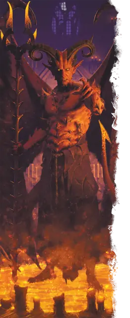

Рогатый дьявол (мальбранш)
Horned Devil
Большое Исчадие (Дьявол), Принципиальное Злое

Класс Защиты 18 Инициатива +7 (17)
Хиты 199 (19к10 + 95)
Скорость 30 футов, Полёта 60 футов
| мод | спас | ||
|---|---|---|---|
| СИЛ | 22 | +6 | +10 |
| ЛОВ | 17 | +3 | +7 |
| ТЕЛ | 21 | +5 | +5 |
| мод | спас | ||
|---|---|---|---|
| ИНТ | 12 | +1 | +1 |
| МДР | 16 | +3 | +7 |
| ХАР | 18 | +4 | +8 |
Сопротивление урону Холод
Иммунитеты Огонь, Яд; Отравленный
Чувства Тёмное зрение 150 футов (игнорирует магическую Темноту), пассивное Восприятие 13
Языки Инфернальный, Телепатия 120 фт.
Опасность 11 (7 200 опыта; БВ +4)
Особенности
Восстановление дьявола. Когда дьявол умирает за пределами Девяти Преисподних, его тело превращается в сернистое облако и в тот же миг заново возрождается со всеми Хитами где-то в Девяти Преисподних.
Сопротивление магии. Дьявол совершает с Преимуществом спасброски от заклинаний и прочих магических эффектов.
Действия
Мультиатака. Дьявол совершает три атаки Обжигающими вилами или Броском пламени в любой комбинации. Он может заменить одну из этих атак использованием Дьявольского хвоста.
Обжигающие вилы. Бросок рукопашной атаки: +10, досягаемость 10 фт. Попадание: 15 (2к8 + 6) Колющего урона плюс 9 (2к8) урона Огнём.
Бросок пламени. Бросок дальнобойной атаки: +8, дистанция 150 фт. Попадание: 26 (5к8 + 4) урона Огнём. Если цель — воспламеняемый объект, который никто не носит и не несёт, она начинает гореть.
Дьявольский хвост. Спасбросок Ловкости: Сл 17, одно видимое дьяволом существо в 10 футах. Провал: 10 (1к8 + 6) Некротического урона, и цель получает дьявольскую рану. Пока цель ранена, она теряет 10 (3к6) Хитов в начале каждого своего хода. Рана закрывается спустя 1 минуту, после восстановления Хитов цели заклинанием или после того, как цель или существо в пределах 5 футов от неё действием перевяжет рану, совершив проверку Мудрости (Медицина) Сл 17.
Бонус мастерства +4
Среда обитания Девять преисподних
Сокровища Реликварные
Рогатый дьявол
Дьявол ненависти и подчинения
Рогатые дьяволы, также известные как корнугоны или мальбранши, — это инфернальные воины, что исполняют волю дьявольских военачальников и ведут прочих дьяволов в бой. Их тела и оружие выкованы в Девяти Преисподних, а врагов они терзают адским пламенем и пагубными ранами.